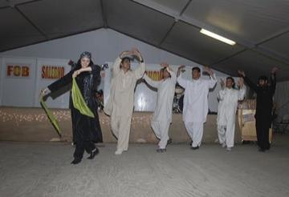

Home / Living Traditions / Africa: Southern Africa
Playable heritage gameGumboot dance rhythm
Also known as Isicathulo
Gumboot dance grew up among gold-mine workers in South Africa, who were not allowed to talk underground and turned their rubber boots into drums. The dancer stamps, slaps the boots and thighs and claps in call-and-reply patterns, each one answered by the next and the whole thing getting faster.
How to play
- The miner stands in a mine yard with four places lit: Stomp for a heavy stamp on both boots, Left boot and Right boot for a slap on that boot, and Clap.
- A ring closes on a place when that movement is due. Tap it as the ring closes and the miner answers with the move.
- Listen for the call and the reply: the pattern of one bar is answered by the next, so play the call, then the answer.
Rules at a glance
- A tap right on the beat is perfect, a near one is good, and taps with no ring open cost points.
- Each pattern is played twice through, in groups of four beats.
- Patterns are simplified teaching figures in the style of the dance, not choreography to copy.
About the tradition
Mine workers in South Africa, kept from speaking on the job, developed boot slaps and stamps as a way to send messages and keep time together. Today school groups and dance companies in South Africa and around the world perform it.
Origins
A living tradition passed from person to person; it is not tied to a single dated origin. It belongs to the cultural world of Africa: Southern Africa.
Credits
- Photo: Maansi Agrawal, CC BY-SA 4.0, source on Wikimedia Commons
- Text: CC BY-SA 4.0, World Heritage Games.
Sources

Get the app
Gumboot dance rhythm is one of 12 folk dance rhythms in the Folk Dance of the World app for Android. Submitted to Google Play; in review. Store links appear here the day it goes live. One app, many traditions, no account needed.
More games to play





More from South Africa


Kaapse Klopse
Malaysia +1 · Street and playground games
Kati
Kenya +1 · Street and playground games
Ndebele geometric wall painting
South Africa · Crafts and makingPlay preview · in the Paper & Paint of the World app
Nguni stick-fighting rhythm skirmish
South Africa +1 · Dexterity and skill gamesPlay preview · in the Sports & Skill of the World app